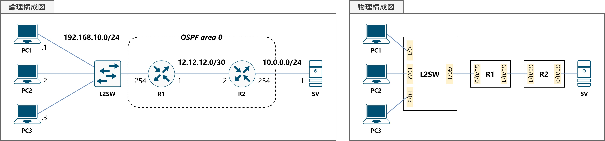

演習04NAT（PAT）
構成図
課題
Rに NAT・PATの設定を行い，PC1-3からSVにアクセスできるようにしてください。
なお，問題ファイルでは次の設定項目は完了しています。
- 機器配置
- PC1-3・SVのIPアドレス付与・デフォルトゲートウェイ設定
- R1-2，L2SWのホスト名設定・IPアドレス付与
- 機器間のケーブル接続
パラメータ
●IPアドレス
| ホスト名 | I/F名 | IPアドレス | サブネットマスク |
|---|---|---|---|
| R1 | G0/0/0 | 192.168.10.254 | 255.255.255.0 |
| G0/0/1 | 12.12.12.1 | 255.255.255.252 | |
| R2 | G0/0/0 | 10.0.0.254 | 255.255.255.0 |
| G0/0/1 | 12.12.12.2 | 255.255.255.252 |
| ホスト名 | IPアドレス | サブネットマスク | デフォルトGW |
|---|---|---|---|
| PC1 | 192.168.10.1 | 255.255.255.0 | 192.168.10.254 |
| PC2 | 192.168.10.2 | 255.255.255.0 | 192.168.20.254 |
| PC3 | 192.168.10.3 | 255.255.255.0 | 192.168.20.254 |
| SV | 10.0.0.1 | 255.255.255.0 | 10.0.0.254 |
●ACL
| ホスト名 | ACL番号 | 動作 | 送信元 |
|---|---|---|---|
| R1 | 1 | 許可 | 192.168.10.0/24 |
| R2 | 1 | 許可 | 12.12.12.1/32 |
| ホスト名 | ACL番号 | I/F | 方向 |
|---|---|---|---|
| R2 | 1 | G0/0/1 | in |
手順
⑴ R1-2にOSPFの設定を行う。なお，プロセスIDは1，エリアは0とする。
⑵ PC1-3からSVへのpingに成功することを確認する。
⑶ R2に，12.12.12.1を送信元IPアドレスとするパケットのみを許可するACLを作成し，G0/0/1にinで適用する。
⑷ PC1-3からSVへのpingに失敗することを確認する。R1からSVへのpingに成功することを確認する。
⑸ R1にACLを作成し，NAT・PATによりIPアドレス変換を行う対象の通信を規定する。
⑹ R1のG0/0/0を内部I/F，G0/0/1を外部I/Fに設定する。
⑺ R1にNAT・PATの設定を行う。
⑻ PC1-3からSVへのpingに成功することを確認する。
⑼ R1のNATテーブルを確認し，PC1-3のIPアドレスがR1のG0/0/1のIPアドレスに変換されていることを確認する。
使用するコマンド
ip nat insideip nat outsideip nat inside source list ＜ACL番号＞ interface ＜I/F名＞ overloadshow ip nat translations
解説
NATは，パケットのIPヘッダに記述されているIPアドレスを変換する技術です。例えば，インターネット上でルーティングできないプライベートIPアドレスを，グローバルIPアドレスに変換するために使われます。NATには，次の3つのパターンがあります。
- スタティックNAT ……1つのIPアドレスを，1つのIPアドレスに変換します。
- ダイナミックNAT ……複数のIPアドレスを，複数のIPアドレスに変換します。
- PAT（NAPT） ……複数のIPアドレスを，1つのIPアドレスに変換します。
PATは，複数のIPアドレスを第4層のポート番号を利用して識別することで，複数台のクライアント端末で1つのIPアドレスを共有することができます。 これにより，例えば自宅にある複数のPCが1つのグローバルIPアドレスを使用してインターネットにアクセスすることできます。
⑴ R1-2にOSPFの設定を行う。なお，プロセスIDは1，エリアは0とする。
OSPFの復習です。詳しくは演習02をご覧ください。
R1(config-router)# network 192.168.10.0 0.0.0.255 area 0
R1(config-router)# network 12.12.12.0 0.0.0.3 area 0
R1(config-router)# passive-interface G0/0/0
R1(config-router)# exit
R1(config)#
R2(config-router)# network 10.0.0.0 0.0.0.255 area 0
R2(config-router)# network 12.12.12.0 0.0.0.3 area 0
R2(config-router)# passive-interface G0/0/0
R2(config-router)# exit
R2(config)#
⑵ PC1-3からSVへのpingに成功することを確認する。
OSPFによる経路交換が完了すると，下の画像のようにPC1-3からSVへのアクセスが可能になります。
⑶ R2に，12.12.12.1を送信元IPアドレスとするパケットのみを許可するACLを作成し，G0/0/1にinで適用する。
これもACLの復習です。詳しくは演習03をご覧ください。
なお今回は，許可する通信以外は“暗黙のdeny”でドロップしてみましょう。
R2(config)# interface G0/0/1
R2(config-if)# ip access-group 1 in
R2(config-if)# exit
R2(config)#
⑷ PC1-3からSVへのpingに失敗することを確認する。R1からSVへのpingに成功することを確認する。
⑶で設定したACLにより，PC1-3のIPアドレスを送信元とするパケットはR2のG0/0/1でドロップしてしまいます。
一方で，R1からのpingは12.12.12.1を送信元とするため，R2に設定したACLを通過できるため，SVへのpingに成功します。
（ルータからのpingは，デフォルトでは出力I/FのIPアドレスが送信元になります）
⑸ R1にACLを作成し，NAT・PATによりIPアドレス変換を行う対象の通信を規定する。
ここからが，NAT・PATの設定になります。次の3段階の手順で設定を行います。
①アドレスを変換する対象のパケットをACLで定義する。
②内部I/F・外部I/Fを設定する。
③NAT・PATを有効化する。
⑸の作業は①にあたります。ACLは通信制御をするだけではなく，特定の処理をする際にその対象となる通信を定義する場合にも使われます（IPsecの暗号化ACLなどがその例です）。
その場合，permitは「許可」ではなく「対象とする」，denyは「禁止」ではなく「対象としない」という意味になります。
PATにおけるACLは，「どのパケットをアドレス変換の対象とするか？」を定義する役割を持ちます。permitのエントリはアドレス変換の対象となり，denyのエントリは対象となりません。
今回は，PC1-3から送られてSVへ向かうパケットの送信元IPアドレスを変換したいので，「192.168.10.0/24」を送信元とするパケットをpermitとします。
⑹ R1のG0/0/0を内部I/F，G0/0/1を外部I/Fに設定する。
これは先程の3段階の②にあたります。
Ciscoでは，ルータを境界としてNAT対象となるネットワークを内部ネットワーク，NATによるアドレス変換後にパケットが出力されるネットワークを外部ネットワークと呼んでいます。
そして，境界となるルータのI/Fのうち，内部NWに属するものを内部I/F，外部NWのものを外部I/Fとして定義します。
今回は，G0/0/0が内部I/F，G0/0/1が外部I/Fに相当します。
コマンドは，設定対象のインターフェースコンフィギュレーションモードでip nat inside・ip nat outsideを使用します。
R1(config-if)# ip nat inside
R1(config-if)# interface G0/0/1
R1(config-if)# ip nat outside
R1(config-if)# exit
R1(config)#
⑺ R1にNAT・PATの設定を行う。
最後に，R1でNAT・PATを有効化します。ip nat inside source listコマンドを使用して，どのACLで定義した通信を対象として，どのI/FのIPアドレスに変換するのかを設定します。
また，overloadオプションを付加することで，複数台のクライアントで一つの内部グローバルアドレスを共有することができるようになり，PATが有効になります。
今回は，「1番」のACLに合致するパケットを，「G0/0/1」のIPアドレスに変換させるので，次のような設定になります。
⑻ PC1-3からSVへのpingに成功することを確認する。
NATの設定が正しく行われていると，IPアドレスが変換され，R2に設定したACLを通過できるため，PC1-3からSVへのpingが成功します。
⑼ R1のNATテーブルを確認し，PC1-3のIPアドレスがR1のG0/0/1のIPアドレスに変換されていることを確認する。
NATテーブルは，show ip nat translationsコマンドで確認できます。「inside
local」（内部ローカルアドレス）が，変換前のクライアントのIPアドレス，「inside global」（内部グローバルアドレス）が，変換後のルータのIPアドレスを表します。
PC1-3のIPアドレス（192.168.10.1-3）が，R1のG0/0/1のIPアドレス（12.12.12.1）に変換されていることが分かります。